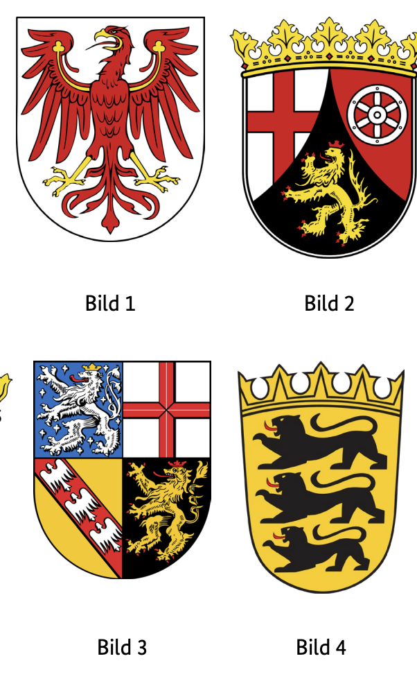
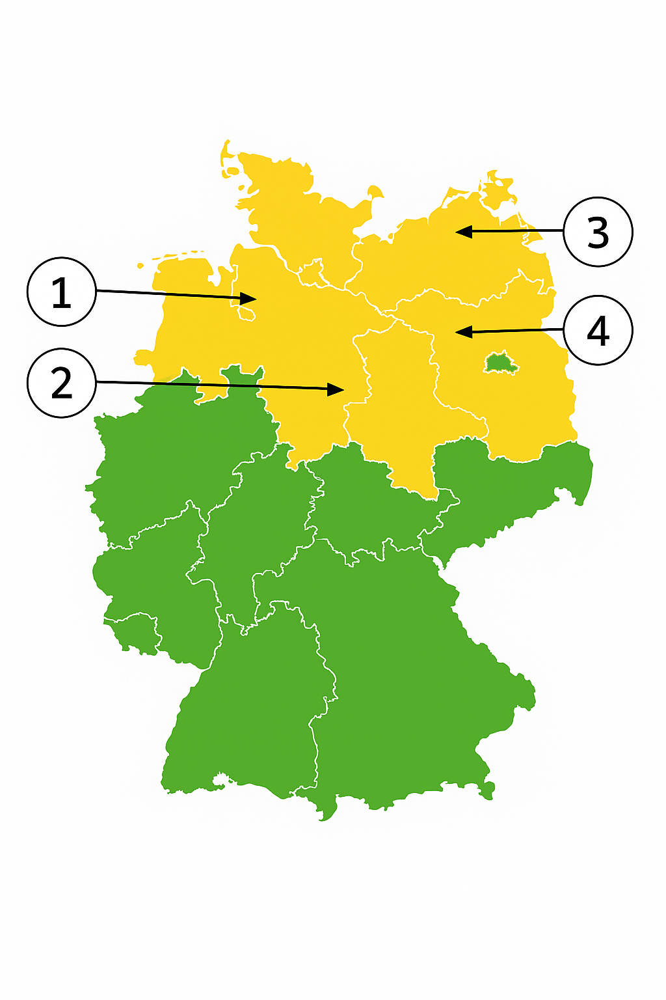

Resmi BAMF soru havuzundaki 10 Brandenburg (BB) eyalet sorusunun Almanca ve Türkçe açıklamalı interaktif çözümleri. Soru üzerine tıklayarak bilginizi anında test edin.
Almanya vatandaşlık ve kalıcı oturum için yapılan Leben in Deutschland (LiD) sınavında adaya toplam 33 çoktan seçmeli soru sorulur:
30 Genel Soru: Demokrasi, hukuk, tarih ve toplumsal yaşam (300 genel soru havuzundan).
3 Eyalet Sorusu: İkamet ettiğiniz eyalete özel tarih, coğrafya ve anayasa soruları (Aşağıdaki 10 eyalet sorusu havuzundan).
Sınavı geçmek için 33 sorudan en az 15 doğru (Vatandaşlık şartı) veya 17 doğru (Oryantasyon kursu başarı sertifikası) yapmanız gerekmektedir.
📝 10 Resmi Brandenburg Sorusunu Çözün
Soru #331 (1 / 10)Federal Eyalet: Brandenburg
Welches Wappen gehört zum Bundesland Brandenburg?
TR: Brandenburg eyaletine ait olan arma hangisi?

✅ Doğru Cevap: Şık A (Bild 1)
Bir yarışmada, numaralı birkaç arma gösterilir. Görev, doğru armayı bir Alman devletine atamaktır. Federal eyaletlerin sembolleri hakkında temel bilgi bu konuda faydalıdır. Özellikle, kırmızı kartalıyla işaretlenen Brandenburg armasını bilmelisiniz. Numaralı illüstrasyonlardan hangisinin ona uyacağına karar vermeniz gerekiyor.
In einem Quiz werden mehrere Wappen mit Nummern angezeigt. Die Aufgabe besteht darin, das richtige Wappen einem deutschen Bundesland zuzuordnen. Dafür ist Grundwissen über die Symbole der Bundesländer hilfreich. Besonders sollte man das Wappen von Brandenburg kennen, das durch seinen roten Adler gekennzeichnet ist. Man soll entscheiden, welche der nummerierten Abbildungen dazu passt.
In a quiz, several coats of arms with numbers are displayed. The task is to assign the correct coat of arms to a German state. Basic knowledge of the symbols of the federal states is helpful for this. In particular, you should know the coat of arms of Brandenburg, which is marked by its red eagle. You have to decide which of the numbered illustrations fits with it.
في مسابقة، تعرض عدة شعارات بالنبالة تحمل أرقاما. المهمة هي تعيين الشعار الصحيح لدولة ألمانية. المعرفة الأساسية برموز الولايات الفيدرالية مفيدة في ذلك. على وجه الخصوص، يجب أن تعرف شعار براندنبورغ، الذي يتميز بنسره الأحمر. عليك أن تقرر أي من الرسوم المرقمة تتناسب معها.
У вікторині демонструються кілька гербів із номерами. Завдання полягає в тому, щоб присвоїти правильний герб німецькій державі. Базові знання символів федеральних земель корисні для цього. Особливо варто знати герб Бранденбургу, який позначений червоним орлом. Вам потрібно вирішити, яка з пронумерованих ілюстрацій підходить.
Soru #332 (2 / 10)Federal Eyalet: Brandenburg
Welches ist ein Landkreis in Brandenburg?
TR: Brandenburg'da hangi bir ilçe var?
✅ Doğru Cevap: Şık A (Prignitz)
Soru, Almanya'nın idari yapısıyla ilgilidir. Almanya, federal eyaletlere ayrılmıştır; bu eyaletler ise kırsal bölgeler ve bağımsız şehirlerden oluşur. Brandenburg, Almanya'nın doğusunda bir federal eyalettir. Çoktan seçmeli soruda, farklı bölgeler adlandırılır ve bunlar farklı federal eyaletlere ait olabilir. Amaç, Brandenburg eyaletine ait olan ilçeyi, Almanya'nın diğer bölgelerinden gelen ilçelerle karşılaştırmak için tanımlamaktır.
Die Frage bezieht sich auf die Verwaltungsstruktur Deutschlands. Deutschland ist in Bundesländer gegliedert, die wiederum aus Landkreisen und kreisfreien Städten bestehen. Brandenburg ist ein Bundesland im Osten Deutschlands. In der Multiple-Choice-Frage werden verschiedene Landkreise genannt, die zu unterschiedlichen Bundesländern gehören können. Ziel ist es, den Landkreis zu erkennen, der zum Bundesland Brandenburg zählt, im Unterschied zu Landkreisen aus anderen Regionen Deutschlands.
The question relates to the administrative structure of Germany. Germany is divided into federal states, which in turn consist of rural districts and independent cities. Brandenburg is a federal state in eastern Germany. In the multiple-choice question, different districts are named, which may belong to different federal states. The aim is to identify the district, which belongs to the state of Brandenburg, in contrast to districts from other regions of Germany.
السؤال يتعلق بالهيكل الإداري لألمانيا. تنقسم ألمانيا إلى ولايات اتحادية، والتي بدورها تتكون من مناطق ريفية ومدن مستقلة. براندنبورغ هي ولاية اتحادية تقع في شرق ألمانيا. في سؤال الاختيار من متعدد، يتم تسمية مناطق مختلفة، والتي قد تنتمي إلى ولايات اتحادية مختلفة. الهدف هو تحديد المنطقة التي تنتمي إلى ولاية براندنبورغ، على عكس المناطق من مناطق أخرى في ألمانيا.
Питання стосується адміністративної структури Німеччини. Німеччина поділена на федеральні землі, які, у свою чергу, складаються з сільських районів і незалежних міст. Бранденбург — федеральна земля на сході Німеччини. У питанні з множинним вибором називаються різні округи, які можуть належати різним федеральним землям. Мета полягає в тому, щоб ідентифікувати район, який належить землі Бранденбург, на відміну від районів інших регіонів Німеччини.
Soru #333 (3 / 10)Federal Eyalet: Brandenburg
Für wie viele Jahre wird der Landtag in Brandenburg gewählt?
TR: Brandenburg'daki eyalet parlamentosu kaç yıl boyunca seçilecek?
✅ Doğru Cevap: Şık C (5)
Soru, federal Brandenburg eyaletinin parlamenter sistemiyle ilgilidir. Eyalet parlamentosu eyalet parlamentosudur ve düzenli aralıklarla seçilir. Eyalet parlamentolarının seçim dönemleri federal eyalete göre farklılık gösterir. Bu görev, Brandenburg'da bir yasama döneminin süresi hakkında bilgi test eder ve seçilebilecek birkaç olası cevap sunar.
Die Frage bezieht sich auf das parlamentarische System des Bundeslandes Brandenburg. Der Landtag ist das Landesparlament und wird in regelmäßigen Abständen gewählt. Je nach Bundesland unterscheiden sich die Wahlperioden der Landtage. Die Aufgabe prüft das Wissen über die Dauer einer Legislaturperiode in Brandenburg und bietet mehrere Antwortmöglichkeiten zur Auswahl an.
The question relates to the parliamentary system of the federal state of Brandenburg. The state parliament is the state parliament and is elected at regular intervals. The electoral periods of the state parliaments differ depending on the federal state. The task tests knowledge about the duration of a legislative period in Brandenburg and offers several possible answers to choose from.
تتعلق المسألة بالنظام البرلماني لولاية براندنبورغ الفيدرالية. برلمان الولاية هو برلمان الولاية وينتخب على فترات منتظمة. تختلف فترات الانتخابات في برلمانات الولايات حسب الولاية الفيدرالية. تختبر المهمة المعرفة حول مدة فترة التشريع في براندنبورغ وتقدم عدة إجابات محتملة للاختيار من بينها.
Питання стосується парламентської системи федеральної землі Бранденбург. Державний парламент є парламентом штату і обирається з регулярними інтервалами. Виборчі періоди парламентів штатів відрізняються залежно від федеральної землі. Завдання перевіряє знання про тривалість законодавчого періоду в Бранденбурзі та пропонує кілька можливих відповідей на вибір.
Soru #334 (4 / 10)Federal Eyalet: Brandenburg
Ab welchem Alter darf man in Brandenburg bei Kommunalwahlen wählen?
TR: Brandenburg'da yerel seçimlerde hangi yaştan oy kullanabilirsiniz?
?
✅ Doğru Cevap: Şık B (16)
Almanya'daki hayat için önemli bir soru
Wichtige Frage für das Leben in Deutschland
Important question for life in Germany
سؤال مهم للحياة في ألمانيا
Важливе питання для життя в Німеччині
Soru #335 (5 / 10)Federal Eyalet: Brandenburg
Welche Farben hat die Landesflagge von Brandenburg?
TR: Brandenburg devlet bayrağı hangi renklere sahip?
✅ Doğru Cevap: Şık B (rot-weiß)
Soru, Alman federal eyaletleri ve resmi sembolleri hakkında bilgi sahibi olmakla ilgilidir. Almanya'daki her eyaletin belirli renklerde kendi devlet bayrağı ve genellikle bir arması vardır. Ulusal bayraklar resmi etkinliklerde, kamu binalarında ve bölgesel etkinliklerde sergilenir. Doğru cevabı bulmak için, Brandenburg eyaletinin bayrağını veya bu eyaletle geleneksel olarak ilişkilendirilen renkleri bilmek gerekir.
Die Frage bezieht sich auf das Wissen über deutsche Bundesländer und ihre offiziellen Symbole. Jedes Bundesland in Deutschland hat eine eigene Landesflagge mit bestimmten Farben und oft einem Wappen. Die Landesflaggen werden bei offiziellen Anlässen, an öffentlichen Gebäuden und bei regionalen Veranstaltungen gezeigt. Um die richtige Antwort zu finden, sollte man die Flagge des Bundeslandes Brandenburg kennen oder wissen, welche Farben traditionell mit diesem Bundesland verbunden sind.
The question refers to the knowledge of German federal states and their official symbols. Each state in Germany has its own state flag with certain colors and often a coat of arms. The national flags are displayed at official events, on public buildings and at regional events. To find the right answer, one should know the flag of the state of Brandenburg or know which colors are traditionally associated with this state.
السؤال يتعلق بمعرفة الولايات الفيدرالية الألمانية ورموزها الرسمية. لكل ولاية في ألمانيا علم ولاية خاص بها بألوان معينة وغالبا شعار النبالة. تعرض الأعلام الوطنية في الفعاليات الرسمية، وعلى المباني العامة، وفي الفعاليات الإقليمية. للعثور على الإجابة الصحيحة، يجب أن يعرف الشخص علم ولاية براندنبورغ أو يعرف الألوان المرتبطة تقليديا بهذه الولاية.
Питання стосується знань про німецькі федеративні землі та їхні офіційні символи. Кожна земля Німеччини має власний державний прапор із певними кольорами і часто герб. Національні прапори демонструються на офіційних заходах, на громадських будівлях та регіональних заходах. Щоб знайти правильну відповідь, потрібно знати прапор землі Бранденбург або знати, які кольори традиційно асоціюються з цією землею.
Soru #336 (6 / 10)Federal Eyalet: Brandenburg
Wo können Sie sich in Brandenburg über politische Themen informieren?
TR: Brandenburg'daki siyasi konuları nereden öğrenebilirsiniz?
?
✅ Doğru Cevap: Şık C (bei der Landeszentrale für politische Bildung)
Almanya'daki hayat için önemli bir soru
Wichtige Frage für das Leben in Deutschland
Important question for life in Germany
سؤال مهم للحياة في ألمانيا
Важливе питання для життя в Німеччині
Soru #337 (7 / 10)Federal Eyalet: Brandenburg
Die Landeshauptstadt von Brandenburg heißt …
TR: Brandenburg eyalet başkenti ...
✅ Doğru Cevap: Şık A (Potsdam)
Almanya'daki hayat için önemli bir soru
Wichtige Frage für das Leben in Deutschland
Important question for life in Germany
سؤال مهم للحياة في ألمانيا
Важливе питання для життя в Німеччині
Soru #338 (8 / 10)Federal Eyalet: Brandenburg
Welches Bundesland ist Brandenburg?
TR: Brandenburg hangi eyalet?

✅ Doğru Cevap: Şık D (4)
Almanya'nın siyasi coğrafyası üzerine yapılan bir sınav, Alman devletlerinin doğru sınıflandırılmasıyla ilgilidir. Soru, federal eyaletlerin ardışık olarak numaralandırıldığı haritalar, numaralandırmalar veya illüstrasyonlara atıfta bulunabilir. Doğru cevabı seçmek için, bu numaralandırılmış bölgelerden hangisinin Brandenburg eyaletine karşılık geldiğini bilmeniz gerekir.
In einem Quiz zur politischen Geografie Deutschlands geht es darum, die deutschen Bundesländer richtig einzuordnen. Dabei kann sich die Frage auf Karten, Nummerierungen oder Abbildungen beziehen, in denen die Bundesländer durchnummeriert dargestellt sind. Um die richtige Antwort zu wählen, muss man wissen, welches dieser nummerierten Gebiete dem Bundesland Brandenburg entspricht.
A quiz on the political geography of Germany is about correctly classifying the German states. The question can refer to maps, numbering or illustrations in which the federal states are numbered consecutively. To choose the correct answer, you need to know which of these numbered areas corresponds to the state of Brandenburg.
اختبار عن الجغرافيا السياسية في ألمانيا يدور حول تصنيف الولايات الألمانية بشكل صحيح. يمكن أن يشير السؤال إلى الخرائط أو الترقيم أو الرسوم التوضيحية التي يتم ترقيم الولايات الفيدرالية فيها بشكل متتالي. لاختيار الإجابة الصحيحة، تحتاج إلى معرفة أي من هذه المناطق المرقمة تتوافق مع ولاية براندنبورغ.
Вікторина з політичної географії Німеччини присвячена правильній класифікації німецьких земель. Питання може стосуватися карт, нумерації або ілюстрацій, на яких федеральні землі нумеруються послідовно. Щоб вибрати правильну відповідь, потрібно знати, яка з цих пронумерованих територій відповідає землі Бранденбург.
Soru #339 (9 / 10)Federal Eyalet: Brandenburg
Wie nennt man die Regierungschefin / den Regierungschef in Brandenburg?
TR: Hükümet başkanına ne diyorsunuz?
Brandenburg mu?
✅ Doğru Cevap: Şık D (Ministerpräsidentin / Ministerpräsident)
Almanya'daki hayat için önemli bir soru
Wichtige Frage für das Leben in Deutschland
Important question for life in Germany
سؤال مهم للحياة في ألمانيا
Важливе питання для життя в Німеччині
Soru #340 (10 / 10)Federal Eyalet: Brandenburg
Welche Ministerin / welchen Minister hat Brandenburg nicht?
TR: Brandenburg'da hangi bakan yok?
✅ Doğru Cevap: Şık B (Außenministerin / Außenminister)
Soru, Almanya'daki Brandenburg eyaletinin eyalet hükümetine atıfta bulunmaktadır. Her federal eyaletin belirli politika alanlarını kapsayan kendi bakanlıkları vardır. Tipik bakanlıklar örneğin maliye, iç işler veya adalettir. Ancak, bazı bakanlıklar sadece federal düzeyde var olur çünkü belirli sorumluluklar eyaletlere ait değildir. Bu arka plan üzerine, bahsedilen bakanlık makamlarından hangilerinin Brandenburg'da bulunmadığı incelenmelidir.
Die Frage bezieht sich auf die Landesregierung des Bundeslandes Brandenburg in Deutschland. Jedes Bundesland hat eigene Ministerien, die bestimmte Politikbereiche abdecken. Typische Ressorts sind zum Beispiel Finanzen, Inneres oder Justiz. Manche Ministerien gibt es jedoch nur auf Bundesebene, weil bestimmte Zuständigkeiten nicht bei den Ländern liegen. Vor diesem Hintergrund soll geprüft werden, welches der genannten Ministerämter es in Brandenburg nicht gibt.
The question refers to the state government of the state of Brandenburg in Germany. Each federal state has its own ministries that cover certain policy areas. Typical ministries are, for example, finance, home affairs or justice. However, some ministries only exist at the federal level because certain responsibilities do not lie with the states. Against this background, it is to be examined which of the mentioned ministerial offices do not exist in Brandenburg.
السؤال يشير إلى حكومة ولاية براندنبورغ في ألمانيا. لكل ولاية اتحادية وزاراتها الخاصة التي تغطي مجالات سياسية معينة. الوزارات النموذجية هي، على سبيل المثال، المالية أو الشؤون الداخلية أو العدل. ومع ذلك، توجد بعض الوزارات فقط على المستوى الفيدرالي لأن بعض المسؤوليات لا تقع على عاتق الولايات. في ظل هذا السياق، يجب فحص أي من المناصب الوزارية المذكورة لا توجد في براندنبورغ.
Питання стосується земельного уряду землі Бранденбург у Німеччині. Кожна федеральна земля має власні міністерства, які охоплюють певні політичні сфери. Типові міністерства — це, наприклад, фінанси, внутрішні справи або юстиція. Однак деякі міністерства існують лише на федеральному рівні, оскільки певні обов'язки не належать штатам. На цьому тлі слід розглянути, які з згаданих міністерських посад не існують у Бранденбурзі.
300 Genel Soruyu ve Eyalet Sorularını Eksiksiz Çalışın
DeutschLernen LiD Trainer'da tüm 310 soruyu 5 farklı dilde (Türkçe, İngilizce, Arapça, Ukraynaca, Almanca) çözebilir, deneme sınavı simülasyonu yapabilirsiniz.